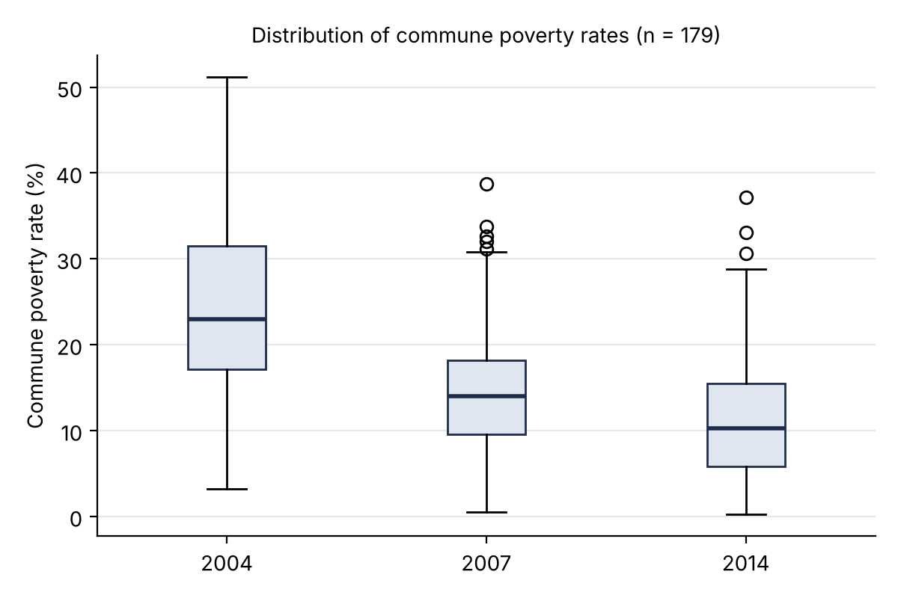
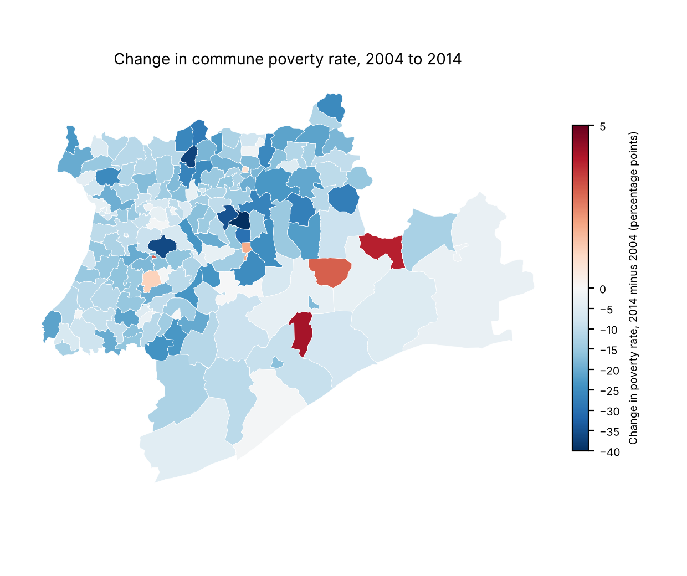
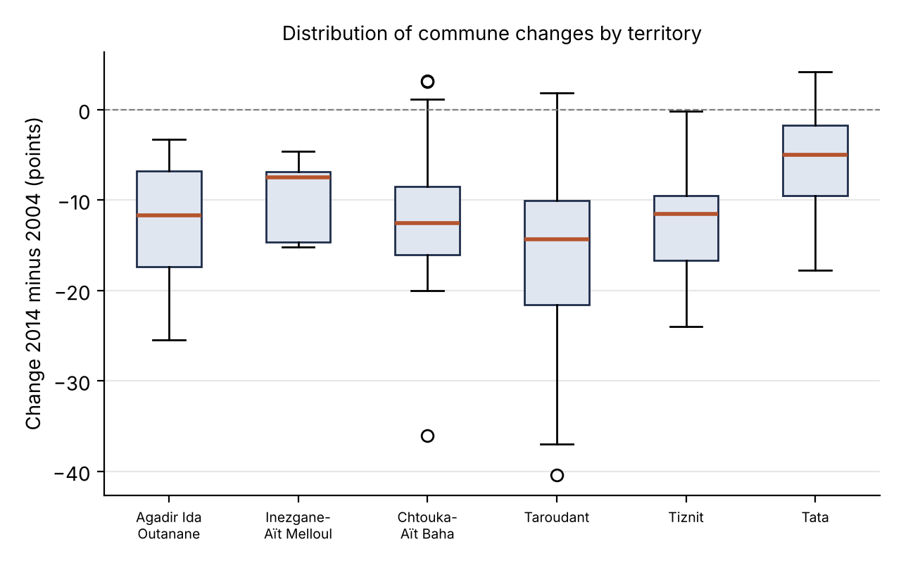

Summary
Official statistics for the six territories of Souss-Massa are published in tables that are difficult to compare across years and places. This project transcribed 93 of these tables, checked them for internal consistency, and used them to answer descriptive questions about population, housing, finance and poverty. The main analysis examines changes in poverty rates between 2004 and 2014 across communes and urban centre units.
Research question
Did poverty decline uniformly across the communes and urban centre units of Souss-Massa between 2004 and 2014, and where did it decline least?
The question is descriptive. It asks how the distribution of poverty rates changed and how the change differed between territories. It does not test a causal hypothesis.
Data and method
Source. The rates come from the HCP communal poverty evolution sheets for 2004, 2007 and 2014, which report poverty rates for communes and urban centre units across the six territories. Subtotal rows (urban, rural and total for each territory) are excluded, leaving 182 geographic units. HCP source publications.
Units analysed. The analysis uses 179 geographic units with a rate available in all three years. These consist of 175 communes and four urban centre units (AC). Three additional AC records from Chtouka-Aït Baha have no rate in the 2004 and 2007 sheets and are excluded. Because only units with all three rates are kept, the results describe these 179 geographic units only.
Notation.
Let xi,
yi and
zi be the poverty rates (in percent)
of geographic unit i in 2004, 2007 and 2014,
for the 179 units.
The change for unit i is
di = zi - xi,
in percentage points.
Two levels of description.
Distributions of local rates are summarised by the median, the 25th and 75th
percentiles, and the interquartile range
IQR = Q3 - Q1; at this level each geographic unit counts once,
regardless of its population, because the poverty sheets give no population
for communes. Territories are also compared on the rate the HCP publishes for
each province or prefecture as a whole (its Ensemble row), which is
weighted by population. The two levels answer different questions (how local
rates changed, and how poverty changed for the people of a territory) and can
rank the territories differently.
No hypothesis test. The 179 units are all the units with a published rate in the three years, not a random sample drawn from a larger set, and neighbouring units are not independent. A p-value or a resampling interval would describe a sampling process that did not take place, so none is reported: the figures below are the observed values for the whole set.
Validation. Before analysis, every table passes an automated check of column lengths, totals and territory names. The check reports no errors on the current dataset (see Data and validation below).
Results
Distribution across the region
| Year | Units | 25th percentile | Median | 75th percentile | Mean |
|---|---|---|---|---|---|
| 2004 | 179 | 17.2% | 23.0% | 31.5% | 24.1% |
| 2007 | 179 | 9.6% | 14.0% | 18.2% | 14.1% |
| 2014 | 179 | 5.8% | 10.2% | 15.5% | 11.1% |
The median poverty rate fell from 23.0% to 10.2%, a decrease of 12.8 percentage points, or 55.5% of the 2004 median. The decline was not evenly spread over the period. The median fell by 9.0 points between 2004 and 2007 and by 3.8 points between 2007 and 2014. On the published figures, most of the decrease therefore falls in the first three years, but this depends on the three HCP poverty maps being comparable over time, which was not checked (see Limitations).
The spread between geographic units also narrowed. The interquartile range was 14.3 points in 2004 (17.2% to 31.5%) and 9.7 points in 2014 (5.8% to 15.5%). The interquartile range therefore narrowed, so the middle half of the observed units became more similar. This describes the spread of the central 50% only; it does not describe the range between the lowest and highest units.


Change by geographic unit
171 of the 179 geographic units (95.5%) recorded a lower rate in 2014 than in 2004. The remaining eight recorded an increase, with the largest increase being 4.2 points. The largest decline was 40.4 points. The median change is −12.5 points; half of the units changed by between −17.8 and −7.8 points.
This is a different statistic from the difference between the two medians (23.0% − 10.2% = 12.8 points): the median of unit-level changes depends on how each geographic unit moves, not only on where the central observation sits in each year's distribution.
Change by territory
| Territory | Units | Median 2004 | Median 2014 | Median change | Units with a decline |
|---|---|---|---|---|---|
| Agadir Ida Outanane | 15 | 21.4% | 6.8% | −11.7 points | 15 of 15 |
| Inezgane-Aït Melloul | 7 | 13.8% | 4.3% | −7.5 points | 7 of 7 |
| Chtouka-Aït Baha | 23 | 17.3% | 7.3% | −12.5 points | 20 of 23 |
| Taroudant | 89 | 28.1% | 11.7% | −14.4 points | 87 of 89 |
| Tiznit | 25 | 20.7% | 7.5% | −11.5 points | 25 of 25 |
| Tata | 20 | 21.2% | 16.6% | −5.0 points | 17 of 20 |
| Territory | 2004 | 2007 | 2014 | Change 2004–2014 | Relative change |
|---|---|---|---|---|---|
| Agadir Ida Outanane | 8.9% | 4.3% | 2.4% | −6.5 points | −73% |
| Inezgane-Aït Melloul | 9.6% | 3.6% | 2.2% | −7.4 points | −77% |
| Chtouka-Aït Baha | 17.1% | 8.4% | 4.1% | −13.0 points | −76% |
| Taroudant | 22.6% | 13.2% | 9.7% | −13.0 points | −57% |
| Tiznit | 20.1% | 12.7% | 6.1% | −14.0 points | −70% |
| Tata | 24.5% | 18.2% | 17.0% | −7.5 points | −31% |
The two levels agree on Tata's position at the end of the period: it has the highest rate in 2014 both as a median of its units (16.6%) and as a population-weighted rate (17.0%), and the smallest relative decline (−31%). They disagree on which territory declined least in points. Counting each unit once, Tata has the smallest median change (−5.0 points). Weighting by population, the smallest declines are in the two urban prefectures, Agadir Ida Outanane (−6.5 points) and Inezgane-Aït Melloul (−7.4), ahead of Tata (−7.5): their populations live mostly in cities whose rates were already low in 2004 (8.9% and 9.6%), while their rural communes, which weigh on the unweighted median, fell further. Agadir Ida Outanane shows the gap most clearly: a median unit-level change of −11.7 points, but −6.5 points for its population as a whole. Taroudant has the highest 2004 median, at 28.1%, and fell to 11.7% by 2014.

Discussion
The results show that poverty declined in 171 of the 179 observed geographic units between 2004 and 2014, but the magnitude of the decline varied substantially across territories. On the published figures, most of the regional decline falls before 2007, a pattern that should be confirmed against the HCP methodology before it is interpreted. Tata retained the highest poverty rate in 2014 on both measures and had the smallest relative decline; in points, its decline is the smallest among units but third smallest once rates are weighted by population. These findings describe where poverty declined and by how much, but do not establish the causes of these territorial differences.
Explaining them would require additional information on local investment, employment and infrastructure, which falls outside the scope of this dataset.
Two features of the analysis limit how far the results can be generalised. First, below the level of the territory only unweighted statistics are possible, because the poverty sheets give no commune populations; the comparison of the two levels above shows that weighting changes the ranking. Second, the unit-level figures exclude three urban centre units for which no rate is published in two of the three years.
Data and validation
The 93 tables are stored as aligned columns and pass an automated check before they are used. The check verifies that columns have equal length, that urban plus rural equals total and men plus women equals total, that the regional row equals the sum of the provinces (within the larger of one unit or 1% of the compared values), that the copies of each table in the data module and in the application agree, and that every province and commune row used in a map reaches exactly one polygon of the official HCP boundary files, inside its own province (a commune name alone is not unique in Morocco: Tabia and Oulad Aissa also exist in other regions). Exact zeros in rate columns are reported as warnings for review rather than treated as missing values.
On the current dataset the check reports no errors and no warnings. It also identified a misaligned row in a 2017 housing table, which was corrected against the yearbook. These checks test internal consistency only, so every value of the tables taken from the 2016, 2017 and 2018 regional yearbooks was also compared with the yearbook itself. This found two transcription errors, both corrected: four cells of the 2017 administrative division (communes and circles of Agadir Ida Outanane, Inezgane-Aït Melloul and Chtouka-Aït Baha), and the 2015 column of the table of companies created, whose three values had been swapped. The 2017 to 2020 labour tables come from the ENE survey releases and were not checked cell by cell.
Scope and personal contribution
Axiora Data builds on work initiated during a remote internship at the HCP regional directorate for Souss-Massa in 2025. I subsequently extended the project into a broader analytical platform and developed the geographic-unit-level poverty analysis presented in this case study.
My contributions cover four areas:
- Data harmonisation: transcription of 93 HCP statistical tables into a structured, column-aligned dataset.
- Data quality assessment: development of automated validation checks and investigation of discrepancies against the source publications.
- Statistical analysis: descriptive analysis of poverty changes between 2004 and 2014, at the level of geographic units and of population-weighted territory rates.
- Application development: implementation of an interactive platform for exploring socio-economic indicators, visualising territorial patterns and generating reports.
Sources
| Dataset | Source | Years |
|---|---|---|
| Poverty and vulnerability rates | HCP: Evolution des indicateurs de pauvreté, Souss-Massa | 2004, 2007, 2014 |
| Population by territory | HCP: Evolution de la population légale selon les provinces et les communes | 1994, 2004, 2014 |
| Regional indicators (population, labour, housing, finance, education) | HCP: Annuaire statistique régional, Souss-Massa | 2017, 2018 |
| Labour indicators by age, sex and setting | HCP: Activity and employment publications (Regional employment publications archive) | 2017–2020 |
| Administrative boundaries (ADM2 and ADM3) | HCP administrative boundary files. Project copies: ADM2 / ADM3. | 2023 edition |
The links lead to the corresponding HCP publication pages or to the boundary files included in the project repository.
Population and sectors
These indicators place the poverty analysis in its regional context.
Population grew by 15.2% between the RGPH 2004 and RGPH 2014 censuses, from 2,324,142 to 2,676,847. Growth was concentrated in Inezgane-Aït Melloul (+29.0%) and Agadir Ida Outanane (+23.1%), while Tiznit (−4.5%) and Tata (−3.1%) declined.
Regional bank credit equals 59.9% of deposits (29.70 billion DH of credit against 49.56 billion DH of deposits). Agadir Ida Outanane has the highest ratio, at 80.2%.
Limitations
- Chtouka-Aït Baha, urban population in 2004. The HCP sheets do not give this figure. The value 39,694 is an inference, chosen so that the province figures sum to the published regional total. It affects the 2004 urban share of the region.
- Weighting below the territory level. Unit-level statistics count each commune once. Weighted figures are available only for whole territories (the HCP Ensemble rates); weighting communes would require commune populations compatible with the poverty sheets.
- Labour tables for 2017 to 2020. These come from the regional results of the ENE survey and were not checked cell by cell against a single published table. They are not used for any result on this page. Every table taken from the 2016 to 2018 regional yearbooks was compared value by value with the yearbook.
- Comparability over time. The 2004, 2007 and 2014 rates come from three separate HCP poverty maps. Their comparability was not checked against the HCP methodology notes. Many units fall sharply in 2007 and rise again by 2014, which may reflect a change of method rather than a real change; a few 2007 values (for example Drargua centre, 0.5%) are being re-checked against the source sheets.
- Scope. The analysis covers Souss-Massa only and is descriptive. Vulnerability rates are in the dataset but are not analysed here.
Stack and access
Data analysis: Python, pandas, NumPy. Visualisation and mapping: Plotly, Matplotlib, GeoPandas. Application: Streamlit. Reporting and assistant: fpdf, Google Gemini API. The live application and the source code, including the tables, the validation script and the analysis script (analyse_pauvrete.py, which reproduces every number on this page), are public.